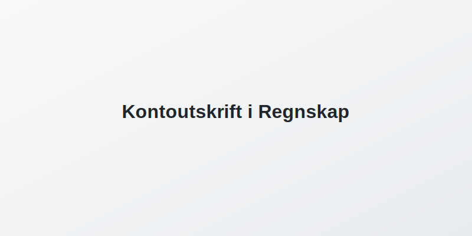

Kontoutskrift er en dokumentasjon av alle transaksjoner på en bankkonto i en gitt periode. Den viser dato, beskrivelse, beløp og saldo for hver post, og er et sentralt grunnlag for bankavstemming og andre avstemmingsprosesser i regnskapet.

Hva er Kontoutskrift?
En kontoutskrift gir en systematisk oversikt over alle bevegelser på en bankkonto, vanligvis per måned eller annen valgt periode. Hver transaksjon inneholder typisk følgende elementer:
- Dato: Transaksjonsdato
- Tekst: Beskrivelse av transaksjonen (for eksempel leverandørbetaling eller gebyr)
- Beløp: Debitert eller kreditert beløp
- Saldo: Kontoens løpende saldo etter hver postering
- Transaksjonstype: Type operasjon (innskudd, uttak, gebyr, rente, osv.)
Typiske kolonner i en kontoutskrift
| Kolonne | Beskrivelse |
|---|---|
| Dato | Transaksjonsdato |
| Tekst | Informasjon om transaksjonen |
| Beløp | Beløpet som er kreditert eller debitert |
| Saldo | Løpende kontosaldo etter transaksjonen |
| Transaksjonstype | Innskudd, uttak, gebyr, rente osv. |
Bruk av Kontoutskrift i Regnskap
Kontoutskrift er et sentralt verktøy for flere regnskapsprosesser og internkontroll:
- Bokføring: Underlag for registrering av banktransaksjoner i regnskapssystemet
- Avstemming: Sikrer at kassabok eller reskontro stemmer med faktisk bankbeholdning
- Revisjon: Dokumentasjon for revisor ved årsavslutning og kontroller
- Rapportering: Grunnlag for kontantstrøm- og likviditetsanalyser
- Internkontroll: Del av kravene i internkontrollforskriften
- Dataimport: CSV-filer av kontoutskrift kan importeres for automatisering av bokføringen (hva-er-csv-fil)
| Bruksområde | Beskrivelse |
|---|---|
| Bokføring | Dokumenterer transaksjoner for korrekt regnskapsføring |
| Avstemming | Sammenligning med kassabok for å avdekke og forklare avvik |
| Revisjon | Bevis på autentiske banktransaksjoner og intern dokumentasjon |
| Rapportering | Underlag for kontantstrømoppstilling og likviditetsrapporter |
Typer Kontoutskrifter
Det finnes ulike formater og kanaler for kontoutskrift:
- Papirkontoutskrift: Tradisjonell månedlig utskrift fra banken
- Elektronisk kontoutskrift: PDF- eller CSV-filer tilgjengelig via nettbank
- Daglig/ukentlig rapport: Automatisk generert for løpende oppfølging
- Leverandørkontoutskrift: Oversikt fra leverandører ved avstemming av leverandørgjeld
Oppsummering
Kontoutskrift er en essensiell kilde til informasjon om bankbevegelser og utgjør fundamentet for bokføring, avstemming og internkontroll i regnskap. Ved å forstå innholdet og strukturen i kontoutskriften kan bedrifter sikre nøyaktighet, oppdage feil og følge kravene til dokumentasjon.